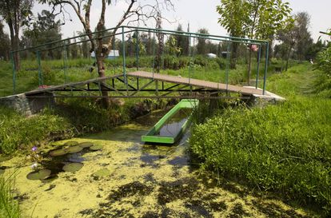

El impacto sobre esta especie es por la actividad humana, principalmente debido a la desaparición de su hábitat, a la transformación del mismo con fines de turismo y agrícola y de urbanismo, los cuales están generando grandes problemas de contaminación.
El hábitat de esta especie esta completamente transformado, en la época prehispánica hacían un complejo hidráulico entre el lago de Texcoco y el lago de Zumpango. Actualmente mucho de este ha desaparecido o se encuentra fragmentado considerablemente, alrededor del 85% de esta zona lacustre ha desaparecido debido a que han sido drenados y rellenados para urbanismo, del 15% que se conserva es utilizarlo en turismo, presentando graves problemas de contaminación; la contaminación que genera esta actividad por la afluencia de visitantes a las Chinampas, miles de casas vierten diariamente sus drenajes al lago sin ningún tratamiento y la acumulación de fertilizantes utilizados en las actividades agrícolas. Otra variable importante es que los niveles de agua no son conservados de manera natural, ya que son nivelados por descargas de aguas tratadas provenientes del Cerro de la Estrella.
La UICN advierte que entre los factores de amenaza contra el ajolote está el crecimiento de la actividad turística mal regulada, lo que aumenta la contaminación en la zona. Xochimilco es conocido internacionalmente por sus paseos en las trajineras, unas embarcaciones decoradas con motivos mexicanos, donde se puede pasear por la zona mientras se come y bebe escuchando mariachi.
Los investigadores han realizado estudios de nicho potencial, un análisis matemático con imágenes satelitales para determinar el hábitat de una especie, y encontraron que no en los 180 kilómetros cuadrados de canales en Xochimilco puede habitar el ajolote, solo en algunos pequeños espacios dispersos en el área puede sobrevivir, lo que ha provocado que existan poblaciones aisladas.
Xochimilco, alguna vez un gran lago, es ahora un laberinto, una red de canales de agua. Esta característica física y las circunstancias socioeconómicas de la zona complican los proyectos de restauración del hábitat, algo que hace este caso distinto a cualquier otro donde se han llevado a cabo restauraciones de gran envergadura. La burocracia es otro laberinto en Xochimilco. El cambio de las administraciones de gobierno cada tres o seis años es un obstáculo para plantear proyectos de conservación de largo alcance. “Las autoridades siempre están interesadas en hacer infraestructura y lo que nosotros queremos hacer es infraestructura social”, señala Zambrano, quien asegura que el trabajo con los campesinos locales es imprescindible para convencerlos de conservar el ecosistema.
